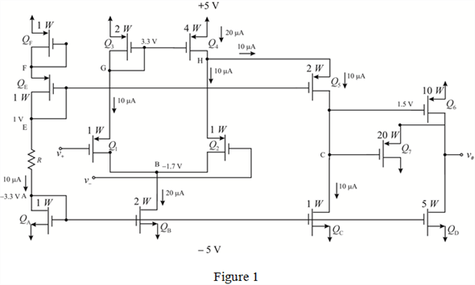

Step 1:
(a)
Refer to Figure P8.121 in the textbook.
The expression for the drain current in transistors, and is,
Here, the intrinsic transconductance for the PMOS is, , the length of each device is, , the width of the devices as multiples of  is, , the drain current is
is, , the drain current is  , the threshold voltage,
, the threshold voltage,  .
.
Substitute all the values in the expression of  to find the value of gate-source voltage, .
to find the value of gate-source voltage, .
Simplify the expression further.
Therefore, the voltages across the drain and source terminals (gate and drain are shorted) of transistors,  and
and  are same and equal to 2 V.
are same and equal to 2 V.
Step 2:
The expression for the drain current in transistor, is,
Here, the intrinsic transconductance for the NMOS is, .
Substitute all the values in the expression of to find the value of  .
.
Therefore, the voltages across the drain and source terminals (gate and drain are shorted) of transistor, is 1.707 V.
Step 3:
Write the nodal equation at node,  .
.
Write the nodal equation at node,  .
.
The resistance  required to get a reference current of is,
required to get a reference current of is,
Thus, the value of resistance,  is .
is .
Step 4:
(b)
The gate source voltages of the transistors  and
and equal in the circuit.
equal in the circuit.
The gate source voltage at  is,
is,
Step 5:
The gate source voltage for the transistor

is,
Write the nodal equation at node,  .
.
Consider that are equal to 0 V.
Write the nodal equation at node,  .
.
Write the nodal equation at node,  .
.
Step 6:
Write the nodal equation at node,  .
.
Write the nodal equation at node,  .
.
Write the nodal equation at node, .

Therefore, the voltages at various nodes are,
Step 7:
Draw the circuit with bias point voltages at all the nodes in the circuit.

Step 8:
(c)
The following table represent all the transistor parameters for all the transistors:
Step 9:
(d)
The total resistance at the drain of transistor,  is,
is,
The voltage gain at the transistor,  is,
is,
Step 10:
The ratio between the output and is,
The gain of the amplifier is,
Thus, the gain of the amplifier,  is,
is,  .
.
Step 11:
The input resistance of the amplifier,  is,
is,  .
.
The output resistance is,
Thus, the output resistance of the amplifier,  is,
is,  .
.
Step 12:
(e)
The input common mode range is,

Thus, the range of input common-mode, is, .
(f)
The maximum voltage at the base of the transistor,  can go to before transistor,
can go to before transistor,  goes into saturation.
goes into saturation.
Hence, the range of linear output,  is, .
is, .
Step 13:
(g)
Consider that a load resistance,  is connected.
is connected.
Consider also that the output is limited to  .
.
Observe the circuit that the current through the transistor, is  . Therefore,
. Therefore,
Thus, the load resistance,  is,
is,  .
.
Step 14:
(h)
Consider that the new value of load resistance is one-tenth of  .
.
The maximum possible value of drain voltage at transistor,  is 2 V.
is 2 V.
Consider that the transistor,  is in cutoff, and transistor,
is in cutoff, and transistor,  conducts. Therefore,
conducts. Therefore,
The general expression for the drain current of transistor,  is,
is,
Equate the expression to the value of  , and substitute all the values.
, and substitute all the values.
Solve the equation to get the value of output voltage.
Step 15:
The minimum possible value of drain voltage at transistor, is .
Consider that the transistor,  is in cutoff, and transistor,
is in cutoff, and transistor,  conducts. Therefore,
conducts. Therefore,
The general expression for the drain current of transistor,  is,
is,
Equate the expression to the value of  , and substitute all the values.
, and substitute all the values.
Solve the equation to get the value of output voltage.
Thus, the range of output signal swing is, .